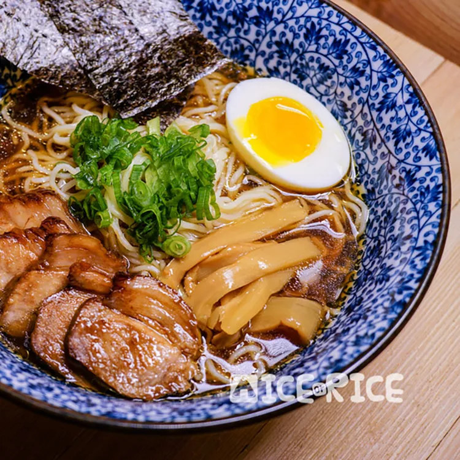

Shahi Paneer

Description
This clear broth seasoned with soy sauce seems very simplistic, but it belies the intense umami flavor within the soup. We use chicken and 4 types of dried seafood to create an incredibly savory broth that is seasoned with a soy sauce tare that gives the broth a bit of sweetness and wonderful complexity. The best thing about this recipe is that we use a pressure cooker that not only helps extract all the flavor very quickly but also creates a beautifully clear broth.
Ingredients
Broth:
- 1 (2 1/2 pound) whole chicken, cut into pieces
- 1 cup dried scallops
- 1 cup dried anchovies
- ¼ cup dried shrimp
- ¼ cup bonito flakes
- 1 (1 inch) piece ginger, thinly slices, divided
- 1 (4 inch) piece dashi kombu (dried kelp)
- 3 quarts water
Tare Sauce:
- 1 cup soy sauce
- ½ cup mirin
- ½ cup sake
- 8 green onions
- ½ cup bonito flakes
- ¼ cup white sugar
- 8 cloves garlic, crushed
- 1(4 inch) piece dashi kombu (dried kelp)
- 6 (3 ounce) packages cooked ramen noodles, or to taste
Steps
- Place chicken, scallops, anchovies, shrimp, bonito flakes, half the ginger, and kombu in an electric pressure cooker. Add water; close and lock the lid. Select the Soup setting; set timer for 90 minutes according to manufacturer's instructions. Allow 10 to 15 minutes for pressure to build.
- Release pressure using the natural-release method according to manufacturer's instructions, 10 to 40 minutes. Strain broth through a colander or fine-mesh sieve. Skim the fatty oil off the top of the broth.
- Combine soy sauce, mirin, sake, green onions, bonito flakes, sugar, garlic, and kombu in a medium saucepan over high heat. Bring to a boil. Reduce heat to low and simmer until flavors blend, about 10 minutes. Strain tare sauce through a fine-mesh sieve into a bowl.
- Pour 2 tablespoons of tare sauce into a large bowl. Ladle in about 2 cups of broth. Add 1/6 of the ramen noodles. Repeat with remaining tare, broth, and ramen.
Back